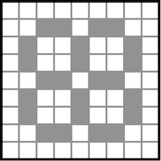
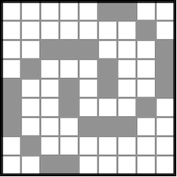
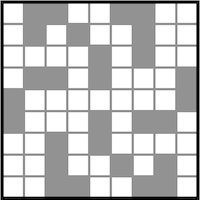
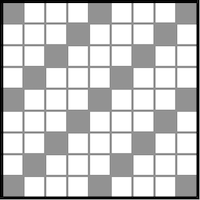
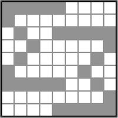

Sudoku
Sudoku has been a hobby of mine since I first discovered these puzzles back in upper secondary school. I soon began to solve sudoku puzzles on a regular basis and also time myself while doing so. In 2005, I took part in the open Nordic Sudoku Championship, where I managed to claim the top spot. Although I am not doing it as frequently anymore, I still enjoy solving a sudoku now and then.
Over the years, I have not only solved sudoku puzzles but also constructed a number of them myself. You can solve these handmade puzzles in the grid below.
Instructions
The rules of sudoku are pretty simple. The numbers 1–9 shall be placed in the 9×9 grid so that each number is found exactly once in each row, column, and 3×3 block. Using the clues that are filled in from the beginning, the (unique) solution can be determined by logic and reasoning alone.
Game progress
New sudoku game
Save game
Game controls
Click on one of the cells to select it (hold down shift to select more than one). Then type in a number or click on one of the number buttons below the grid to enter that number in the selected cell.
| Check: | Click here to check your current progress and know if there are any errors. After completing the sudoku, click this button to stop the timer and display your final time. |
| New game: | For a new sudoku game, you have three options. You can solve a randomly selected sudoku, you can enter a puzzle number to solve a specific sudoku, or you can continue a saved game (see below). |
| Save game: | This will display the puzzle number, so that you can find the same sudoku later. You are also given a string of numbers that contains information on your current progress. Copy this string and save it somewhere for later. To continue the sudoku, you paste this exact string in the third "new game" option. |
| Pause: | Click here to pause the game. This will temporarily stop the timer and also hide the sudoku board from view. Click the same button again ("Resume") to continue solving. |
A few notes on the design
Sudoku puzzles come in varying levels of difficulty. Although the difficulty is somewhat subjective, harder puzzles generally require more complicated techniques in order to reach the solution without guessing. There are a lot of websites that explain various sudoku solving techniques. Unfortunately, my own sudoku puzzles have no difficulty ratings. I usually try to make them quite tricky, but they often end up a bit easier than intended, so I suppose most are of easy or medium difficulty.
Classical sudoku puzzles typically have a 180° rotational symmetry when it comes to the placement of the initial clues. Such a symmetry is almost always found in my own sudokus as well. In addition, I tend to aim for the initial clues to be placed in a given pattern to make the sudoku more aesthetically pleasing. A few such patterns are outlined below, with the shaded cells representing the positions of the initial clues. You can click on a pattern to get the corresponding puzzle number, so that you can select and solve a sudoku with that particular pattern in the applet above.
    
JavaScript files
The JavaScript applet embedded on this page was written primarily to display the sudoku puzzles that I have constructed, and therefore it does not have a functionality to generate entirely new puzzles. Included is also a basic sudoku solver, which was used to determine all the solutions. My initial plan of writing a more sophisticated solver (analyzing the board using different solving techniques and giving a score for the puzzle difficulty) is postponed for an indefinite amount of time.
The JavaScript code can freely be reused and/or modified if you find it useful. Please note that this was basically my first project of writing JavaScript code, so I am sure that the code could be improved.